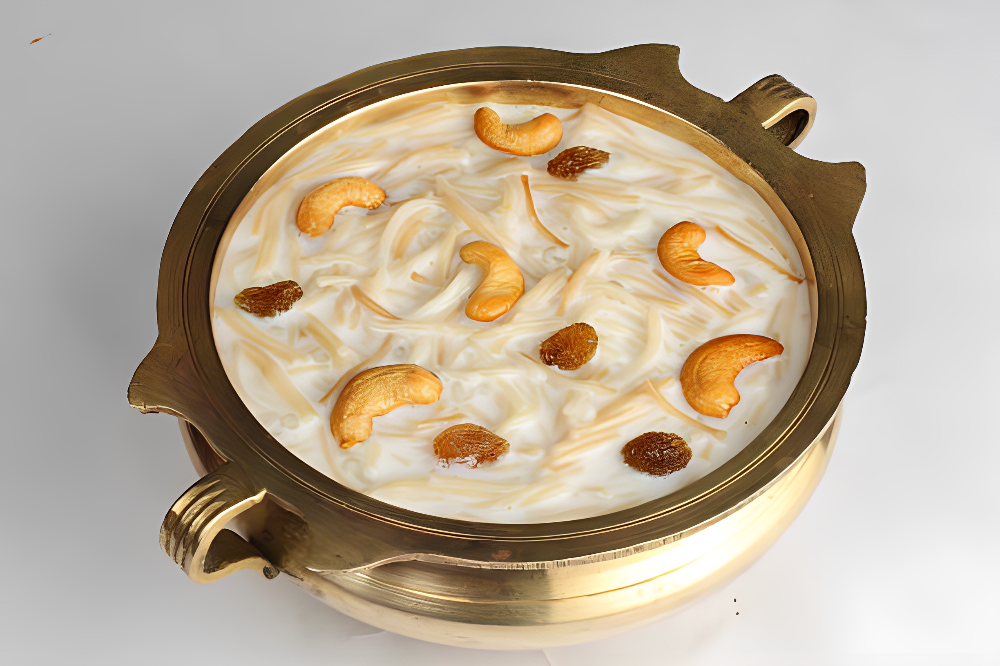

Pal Payasam, also known as Milk Kheer, is a rich and creamy South Indian dessert made with rice, milk,
and sugar.
Ingredients
1/2 cup basmati rice
1 liter full-fat milk
1 cup sugar (adjust according to taste)
1/4 cup ghee
10-15 cashews
10-15 raisins
1/2 teaspoon cardamom powder
A pinch of saffron strands (optional)
1/4 cup condensed milk (optional, for extra richness)

Instructions
Rinse the basmati rice in water and soak it for about 30 minutes.
In a heavy-bottomed pan, bring the milk to a boil.
Drain the soaked rice and add it to the boiling milk. Simmer on low heat, stirring occasionally.
In a separate pan, heat ghee and fry the cashews and raisins until they turn golden brown. Set them
aside.
Continue cooking the rice and milk mixture until the rice is fully cooked and the milk thickens. This
may take around 45-60 minutes.
Add sugar and stir until it dissolves completely. If you prefer a richer taste, you can add condensed
milk at this stage.
Add cardamom powder and the fried cashews and raisins. Mix well.
If using saffron, soak a pinch of saffron strands in a tablespoon of warm milk and add it to the
payasam.
Let the payasam simmer for an additional 10-15 minutes until it reaches the desired consistency.
Turn off the heat and let it cool slightly before serving.
Pal Payasam is best enjoyed warm or chilled. Garnish with a few more nuts and saffron strands before
serving. It's a delightful dessert that captures the essence of traditional South Indian sweets😋.